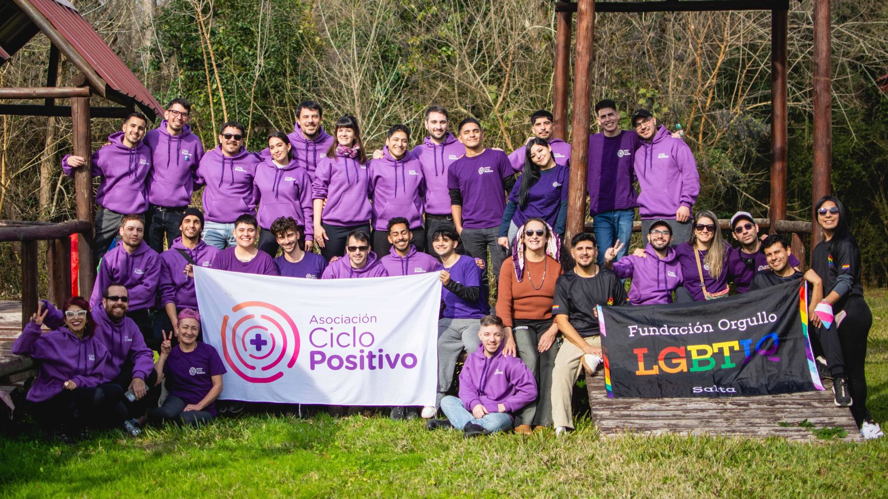

Somos un colectivo de activistas, profesionales y referentes que trabajamos por el acompañamiento integral a poblaciones diversas y en situación de vulnerabilidad.

Somos un colectivo compuesto por activistas, militantes, estudiantes, profesionales de la salud y las ciencias sociales que se reúne para trabajar en pos de la promoción y la protección de los derechos, brindar acompañamiento en asuntos jurídicos, psicosociales y asistencia integral para las poblaciones diversas y en situación de vulnerabilidad.
Desde Asociación Ciclo Positivo afirmamos nuestro compromiso ineludible con la salud pública, con la información científica de calidad, con acciones que construyen equidad. Buscamos promover, fomentar, mejorar y desarrollar todo lo relacionado con la asistencia integral, la investigación y el estudio de la diversidad sexual, social, cultural, étnica, funcional, cognitiva y todas cuanto pudieran expresarse sin perder de vista la singularidad de cada una de ellas.
Espacios seguros, confidenciales y de escucha mutua entre pares.
El grupo de encuentro es un espacio para compartir, escucharnos y acompañarnos, desde una mirada de salud integral comunitaria.
Los grupos están abiertos a personas con y sin VIH que quieran encontrarse, hacer preguntas, intercambiar experiencias y construir redes de apoyo.
📍 CABA: Viernes de 17:30 a 19 hs.
📍 Ushuaia: Un sábado por mes de 18 a 20 hs.
💬 Si vivís en Córdoba o Mendoza, anotate en el formulario para recibir novedades sobre próximos grupos en tu ciudad.

Un concepto revolucionario que transforma vidas, derriba estigmas y garantiza derechos.
Cuando una persona que vive con VIH toma su medicación antirretroviral (TAR) de manera constante y logra mantener su carga viral en niveles indetectables en sangre, **no transmite el virus** por vía sexual a sus parejas.
Este gran avance científico está respaldado por rigurosos estudios internacionales a gran escala (como HPTN 052 y PARTNER), demostrando que la ciencia es la mejor herramienta contra el estigma y la discriminación.
Difundir I = I es un acto de justicia social. Saber que el tratamiento funciona como prevención empodera a las personas y desarma los prejuicios sociales.
Información basada en evidenciaCharlas, talleres, conversatorios y campañas que impulsamos desde la Asociación.
Espacios abiertos de formación e intercambio sobre salud sexual, derechos y derribo de mitos.
Jornadas recreativas y culturales para conectar con la comunidad en el espacio público.
Producción de contenido informativo y placas de concientización para compartir activamente.
Herramientas esenciales, conceptos clave y derechos que nos amparan.
La legislación actual protege la confidencialidad de tu diagnóstico. No es obligatorio presentar test de VIH para ingresos laborales ni estudios médicos pre-ocupacionales discriminatorios.
Confidencialidad garantizadaTomar la medicación antirretroviral de forma constante reduce la carga viral en sangre a niveles indetectables. Esto significa que **no se transmite el virus** por vía sexual.
Evidencia científicaEl acceso a la medicación antirretroviral es un derecho garantizado. Las obras sociales, prepagas y el sistema público de salud deben proveerla de manera gratuita.
Acceso universalSi tenés dudas sobre testeos, acceso a derechos o querés orientación profesional, existen líneas de atención oficiales y gratuitas en todo el país.
Orientación y consultasMomentos compartidos y postales de nuestros encuentros.
Construyendo redes y acompañamiento todos los días.
Podés ver más imágenes y contenido diario en nuestro perfil de Instagram.
 Ciclo Positivo
Ciclo Positivo